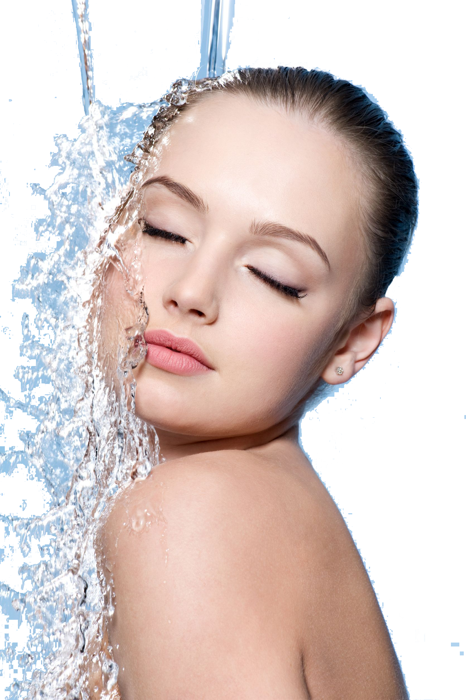

TIGA TAHAPAN BASIC SKINCARE ROUTINE br>
1. Cleansing
Membersihkan wajah merupakan tahapan skincare yang sangat penting untuk merawat kulit Anda.
Bersihkan wajah Anda dengan menggunakan facial wash maksimal dua kali dalam sehari.

Baca Lebih Banyak
2. Moisturizing
Penggunaan pelembab pada rangkaian skincare routine Anda dapat membantu
mengisi kembali air yang hilang dari kulit Anda.
Pelembab dengan bahan-bahan seperti hyaluronic acid dan ceramide dapat
memberikan hidrasi sehat yang dibutuhkan kulit Anda agar tetap sehat.
Kebanyakan dari Anda yang memiliki kulit berminyak mungkin berpikir bahwa Anda tidak membutuhkan pelembab.

Meskipun Anda memiliki kulit berminyak, penggunaan pelembab pada kulit Anda tetap penting.
Sebab faktanya, kurangnya kelembapan dapat membuat kulit Anda memproduksi lebih banyak minyak untuk mengimbanginya,
yang dapat menyebabkan pori-pori tersumbat dan berjerawat.
Baca Lebih Banyak
3. Protecting
Tahapan basic skincare routine yang tak kalah penting yang harus
Anda terapkan adalah melindungi wajah Anda dengan menggunakan tabir surya atau SPF.
Meskipun masih banyak orang yang hanya menggunakan tabir surya
saat pergi ke pantai, nyatanya tabir surya penting digunakan setiap hari.
Saat ini telah banyak bermunculan produk pelembab maupun
kosmetik yang mengandung SPF, sehingga memudahkan Anda untuk melindungi kulit
tanpa harus membeli lebih dari satu produk. Pastikan pelindung yang
Anda gunakan memiliki formula yang mengandung SPF lebih dari 30 untuk memastikan
kulit Anda terlindungi dengan baik.
Setelah Anda melakukan tiga tahap basic skincare routine diatas,
jangan berkecil hati jika kulit Anda tidak berubah dalam semalam.
Untuk hasil yang dapat terlihat, usahakan untuk mengikuti rutinitas Anda setidaknya selama enam minggu.
Ini merupakan perkiraan jumlah waktu yang dibutuhkan kulit Anda untuk
menyelesaikan siklus pembaruan dirinya dengan sel-sel kulit baru.
Setelah siklus ini selesai, Anda dapat mulai melihat pengaruh produk yang telah Anda gunakan.
Baca Lebih Banyak